Last updated: 2023-02-02
- Credit to BBC data team
- How to create DLUHC style graphics
- Make a line chart
- Make a bar chart
- Static LA Maps
Credit to BBC data team
This cookbook has been copied from the much better BBC rcookbook, and reapplied to work for creating graphics in a DLUHC style. Credit must go to the BBC data team for their fantastic product which the team at DLUHC have essentially copied for our own use.
How to create DLUHC style graphics
We have developed an R package and an R cookbook to make the process of creating publication-ready graphics in our in-house style using R’s ggplot2 library a more reproducible process, as well as making it easier for people new to R to create graphics.
The cookbook below should hopefully help anyone who wants to make graphs or maps quickly in a consistent DLUHC style
We’ll get to how you can put together the various elements of these graphics, but let’s get the admin out of the way first…
Load all the libraries you need
A few of the steps in this cookbook - and to create charts in R in general - require certain packages to be installed and loaded. So that you do not have to install and load them one by one, you can use the p_load function in the pacman package to load them all at once with the following code.
#This line of code installs the pacman page if you do not have it installed - if you do, it simply loads the package
if(!require(pacman))install.packages("pacman")
pacman::p_load('dplyr', 'tidyr', 'gapminder',
'ggplot2', 'ggalt', 'cowplot', 'sf',
'forcats', 'R.utils', 'png',
'grid', 'ggpubr', 'scales',
'dluhctheme')Install the dluhctheme package
dluhctheme is not on CRAN, so you will have to install it directly from Github using devtools.
If you do not have the devtools package installed, you will have to run the first line in the code below as well.
# install.packages('devtools')
devtools::install_github('communitiesuk/dluhctheme')For more info on dluhctheme check out the package’s Github repo, but most of the details about how to use the package and its functions are detailed below.
When you have downloaded the package and successfully installed it you are good to go and create charts.
How does the dluctheme package work?
The package has two types of functions; Generic functions: dluhc_style() and finalise_plot() are functions which are designed to be generic themes which can be added to any ggplot2 object. They only edit the axes and the gridlines and define the text style, they do not set the colour of lines or fill on the graphs. Specific functions: The other functions are used as a quick tool for instantly creating a particular type of formatted graph based on a set shape of data inputted. These are less adaptable, but allow a user to create a graph in one line of code: one_line_timeseries(), two_line_timeseries(), facet_highlight_timeseries(), LA_map(), facet_barchart(), forecast_timeseries() These functions allow you to create a data visualisation in a set theme instantly but are more fixed in some of their formatting. Examples of these functions can all be found later in this document
Style function
dluhc_style():is added to the ggplot ‘chain’ after you have created a plot and has one argument for text size. What it does is generally makes text size, font and colour, axis lines, axis text, margins and many other standard chart components into DLUHC style, which has been mainly copied from the BBC data team with some slight tweaks based on the best practise suggestions by the Analysis Function and ONS.
Note that colours for lines in the case of a line chart or bars for a bar chart, do not come out of the box from the dluhc_style() function, but need to be explicitly set in your other standard ggplot chart functions.
The code below shows how the dluhc_style() should be used within standard chart-production workflow. This is an example for a very simple line chart, using data which is contained within the dluhctheme package.
#Data for chart from 2021 Social Housing Sales statistical release is contained within the dluhctheme package
kable(head(Social_Housing_Sales))| year | type | count |
|---|---|---|
| 31/03/2008 | Right to Buy | 15362 |
| 31/03/2008 | Shared Ownership | 2231 |
| 31/03/2009 | Right to Buy | 3882 |
| 31/03/2009 | Shared Ownership | 1162 |
| 31/03/2010 | Right to Buy | 3144 |
| 31/03/2010 | Shared Ownership | 1851 |
#The date column is not in the proper R format, so needs to be converted using the function below
line_df <- Social_Housing_Sales %>%
mutate(date = as.Date(year,tryFormats = "%d/%m/%Y"))
#Make plot
linegraph <- ggplot(line_df, aes(x = date, y = count)) +
geom_line(aes(colour = type),size = 1) 
A single line can be added at the end of the script, like below, to make the graph, but NOT the line colours have a generic dluhc style
styled_line <- linegraph +
dluhc_style()By adding the dluhc style, the grap will change to look like this
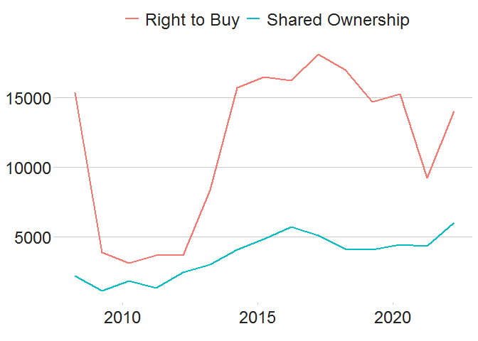
Here is what the dluhc_style () function actually does under the bonnet. It essentially modifies certain arguments in the theme function of ggplot2.
For example, the first argument is setting the font, size, typeface and colour of the title element of the plot.
## function (size = 2)
## {
## ggplot2::theme(plot.title = ggplot2::element_text(size = size *
## 11, face = "bold"), plot.subtitle = ggplot2::element_text(size = size *
## 9), plot.caption = ggplot2::element_blank(), legend.position = "top",
## legend.text.align = 0, legend.background = ggplot2::element_blank(),
## legend.title = ggplot2::element_blank(), legend.key = ggplot2::element_blank(),
## legend.text = ggplot2::element_text(size = size * 9,
## color = "#222222"), axis.title = ggplot2::element_blank(),
## axis.text = ggplot2::element_text(size = size * 9, color = "#222222"),
## axis.text.x = ggplot2::element_text(margin = ggplot2::margin(5,
## b = 10)), axis.ticks = ggplot2::element_line(color = "#cbcbcb"),
## axis.line = ggplot2::element_blank(), panel.grid.minor = ggplot2::element_blank(),
## panel.grid.major.y = ggplot2::element_line(color = "#cbcbcb"),
## panel.grid.major.x = ggplot2::element_blank(), panel.background = ggplot2::element_blank(),
## strip.background = ggplot2::element_rect(fill = "white"),
## strip.text = ggplot2::element_text(size = size * 11,
## hjust = 0))
## }
## <bytecode: 0x14eaf5c0>
## <environment: namespace:dluhctheme>You can modify these settings for your chart, or add additional theme arguments, by calling the theme function with the arguments you want - but please note that for it to work you must call it after you have called the dluhc_style function. Otherwise dluhc_style() will override it.
This will add some gridlines, by adding extra theme arguments to what is included in the dluhc_style() function. There are many similar examples throughout the cookbook.
theme(panel.grid.major.x = element_line(color="#cbcbcb"),
panel.grid.major.y=element_blank())Save out your finished chart
After adding the dluhc_style() to your chart there is one more step to get your plot ready for publication. finalise_plot(), the second function of the dluhctheme package, will left-align the title, subtitle and add the footer with a source and an image in the bottom right corner of your plot. It will also save it to your specified location. The function has five arguments:
Here are the function arguments: finalise_plot(plot_name, source, save_filepath, width_pixels = 640, height_pixels = 450, logo_image_path)
-
plot_name: the variable name that you have called your plot, for example for the chart example aboveplot_namewould be"styled_line"
-
source: the source text that you want to appear at the bottom left corner of your plot. You will need to type the word"Source:"before it, so for examplesource = "Source: ONS"would be the right way to do that. -
save_filepath: the precise filepath that you want your graphic to save to, including the.pngextension at the end. This does depend on your working directory and if you are in a specific R project. An example filepath would be:Desktop/R_projects/charts/line_chart.png. -
width_pixels: this is set to 640px by default, so only call this argument if you want the chart to have a different width, and specify what you want it to be. -
height_pixels: this is set to 450px by default, so only call this argument if you want the chart to have a different height, and specify what you want it to be. -
logo_image_path: this argument specifies the path for the image/logo in the bottom right corner of the plot. The default is for a placeholder PNG file with a background that matches the background colour of the plot, so do not specify the argument if you want it to appear without a logo. If you want to add your own logo, just specify the path to your PNG file. The package has been prepared with a wide and thin image in mind.
Example of how the finalise_plot() is used in a standard workflow. This function is called once you have created and finalised your chart data, titles and added the dluhc_style() to it:
finalise_plot(plot_name = my_line_plot,
source = "Source: Example source",
save_filepath = "filename_that_my_plot_should_be_saved_to.png",
width_pixels = 640,
height_pixels = 450,
logo_image_path = "placeholder.png")So once you have created your plot and are relatively happy with it, you can use the finalise_plot() function to make the final adjustments and save out your chart so that you can look at it outside RStudio.
It is important to mention that it is a good idea to do this early on because the position of the text and other elements do not render accurately in the RStudio Plots panel because this depends on the size and aspect ratio you want your plot to appear, so saving it out and opening up the files give you an accurate representation of how the graphic looks. If you are working on graphs which will go onto a gov.uk page, these need to be svg files with pixels of 640 x 640.
The finalise_plot() function does more than just save out your chart, it also left-aligns the title and subtitle, adds a footer with the logo on the right side and lets you input source text on the left side.
So how can you save out the example plot created above?
finalise_plot(plot_name = styled_line,
source = " Source: Social Housing Sales 2021, DLUHC ",
save_filepath = "images/line_plot_finalised_test.png",
width_pixels = 640,
height_pixels = 550)Make a line chart
Single line chart
The data we are going to use for these examples is the Social_Housing_Sales dataset contained within the dluhctheme package.
This dataset has two types of sale, Right to Buy and Shared Ownership, and has the year in the format “31/03/2021”, which in R is referred to as "%d/%m/%Y". To see more about date formats, see the section at the end of this document.
#Prepare data, select only Right to Buy sales and clean the date column
RTB_Sales <- Social_Housing_Sales %>%
filter(type=="Right to Buy") %>%
mutate(date = as.Date(year,tryFormats = "%d/%m/%Y"))
#Make plot, a line graph with the union blue colour (#012169)
line <- ggplot(RTB_Sales, aes(x = date, y = count)) +
geom_line(colour = "#012169", linewidth = 1) +
dluhc_style() 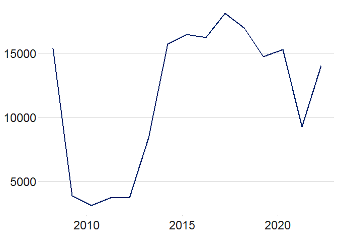
dluhctheme function
If you want to create a graph with one line, plotting a variable against time, in a consistent DLUHC style, you can use the one_line_timeseries() function within the dluhctheme package. This function negates the need for writing any of the ggplot code and instantly takes your data from a dataframe and puts it into a graph.
RtB_graph <- one_line_timeseries(.data = RTB_Sales,
ycol = count,
datecol = year,
dateformat = "%d/%m/%Y")-
.datais the name of the dataframe you are using. It must contain at least a value column (as a numeric) and a date column (in a format you can define) -
datecolis the name of the column in your dataframe which contains the date variable. You do not need to give this column name in quotations marks -
ycolis the name of the column in your dataframe which contains the numeric variables. If the column is not numeric, the function will return an error message -
dateformatis the format which your date is written in. It has a default of “%Y-%m-%d”, which is a date written in the format of “2021-02-25”. If your date is in the format 25/02/2021, you would write “%d/%m/%Y” for this variable. For more details on date format, see the table at the bottom of this document
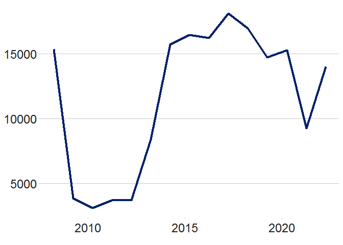
You can further add changes if you don’t like them, such as the placement of the y axis, using the scale_y_continuous function
RtB_graph +
scale_y_continuous(limits = c(0,20000))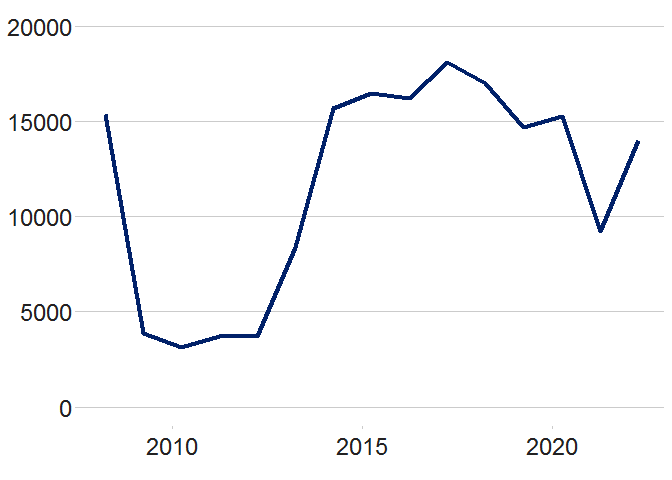
Multiple line chart
It is suggested that for line graphs with multiple lines, you try to limit the number of lines on a single graph to make reading the data easier. Guidance from ONS suggests no more than 5 lines on a single graph. The below example plots 2 lines on a chart
#See what the data looks like
two_line_df <- Social_Housing_Sales %>%
mutate(date = as.Date(year,tryFormats = "%d/%m/%Y"))
#Make plot
multiple_line <- ggplot(two_line_df, aes(x = date, y = count, colour = type)) +
geom_line(linewidth = 1) +
scale_colour_manual(values = c("#012169", "orange")) +
dluhc_style() 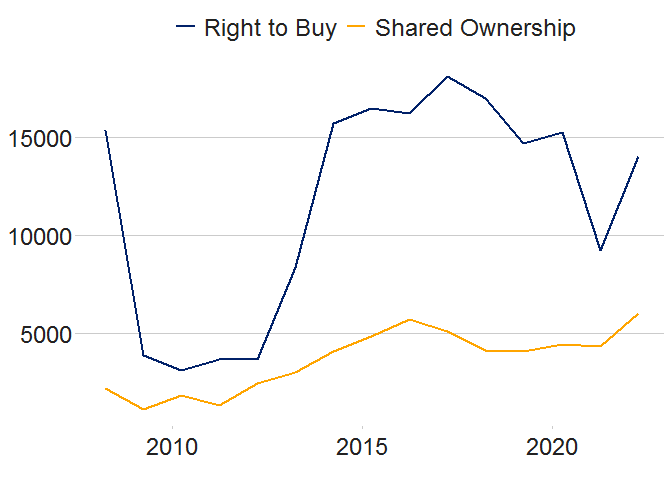
The scale_color_manual function sets the two colours of the lines. As can be seen in the text it can use both the hex-code (#012169 is the hex code for DLUHC union blue) as well as words (“orange”) which are saved in the function as colours.
The “DLUHC colours” for a multi-line time series are contained within a function in the dluhctheme package: multi_line_timeseries
dluhctheme function
multi_line_timeseries(.data = Social_Housing_Sales,
datecol = year,
ycol = count,
groupcol = type,
dateformat = "%d/%m/%Y")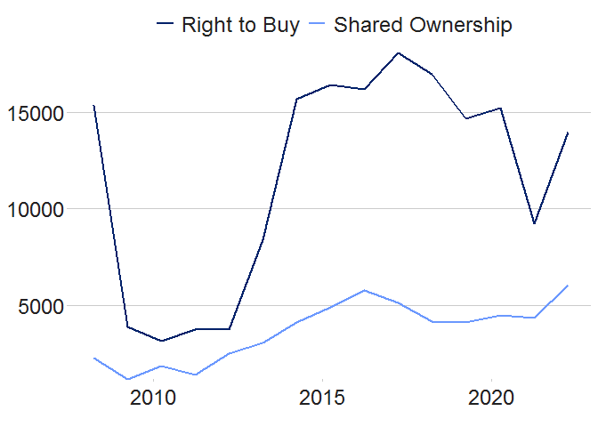
This function works identically to the one_line_timeseries function with the addition of the groupcol variable which is the variable to denote how the data is split.
To use this function, your data must be in the same format as the Social_Housing_Sales dataset, with one column for the date, one for the numeric value and one for the category variable.
This function sets up to five different colours for a line chart. If you want to use more than 5 colours, it is suggested that you break the graphs up into separate facets and use a function like the one below:
Using facets
Faceting is a method used to separate categorical variables and plot on multiple separate graphs. The data contained within the Net_Additions_Regional dataset creates one time series for each of the nine regions in England. Below shows it plotted on one graph:
kable(head(Net_Additions_Regional))| Year | Region | Net_Additions |
|---|---|---|
| 31/03/2001 | North East | 2890 |
| 31/03/2001 | North West | 10720 |
| 31/03/2001 | Yorkshire and The Humber | 10800 |
| 31/03/2001 | East Midlands | 14830 |
| 31/03/2001 | West Midlands | 13790 |
| 31/03/2001 | East of England | 17780 |
To plot on a graph, the date column needs to be cleaned:
Cleaned_data <- mutate(Net_Additions_Regional, date = as.Date(Year,tryFormats = "%d/%m/%Y"))
NetAdd_graph <- Cleaned_data %>%
ggplot(aes(x = date, y = Net_Additions, groups = Region)) +
geom_line(aes(colour = Region)) +
dluhc_style()
NetAdd_graph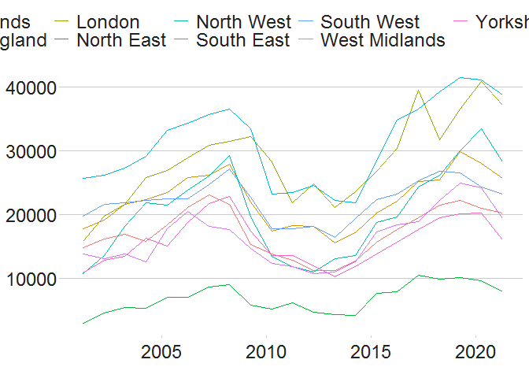
As you can see, the graph above is very messy and difficult to follow each region individually easily. One option is to facet the graphs by region, using the facet_wrap function:
NetAdd_graph <- Cleaned_data %>%
ggplot(aes(x = date, y = Net_Additions, groups = Region)) +
geom_line() +
facet_wrap(~Region,scales="fixed") +
dluhc_style(size = 1)
NetAdd_graph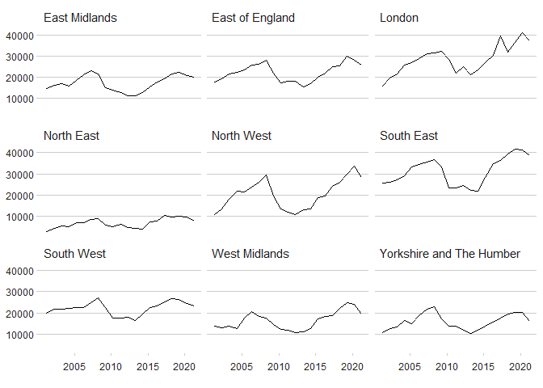
The dluhc_style function has a size variable which is useful to set to 1 for a faceted time series, as it looks quite busy if the text size is set to the same as it would otherwise be on a normal time series.
The facet_wrap function is made of 2 parts, the first is to separate which variables the graph is going to be used to break the data up by (~Region), and the second (scales=) denotes whether all will be plotted on the same axis scale (scales = “fixed”) or have a free axis (scales = “free”). There are benefits to your graphs for doing either of these: fixed allows you to compare the regions to one another more easily but can hide the changes in some regions which have a low absolute value, while free scales allows you to see the rate of change in each region, but does not show them compared to one another easily.
dluhctheme function
There is also a standard function built into the dluhctheme package which allows you to create a highlighted faceted graph in one step, like the previous functions
facet_graph <- facet_highlight_timeseries(.data = Net_Additions_Regional,
datecol = Year,
ycol = Net_Additions,
groupcol = Region,
dateformat = "%d/%m/%Y")
facet_graph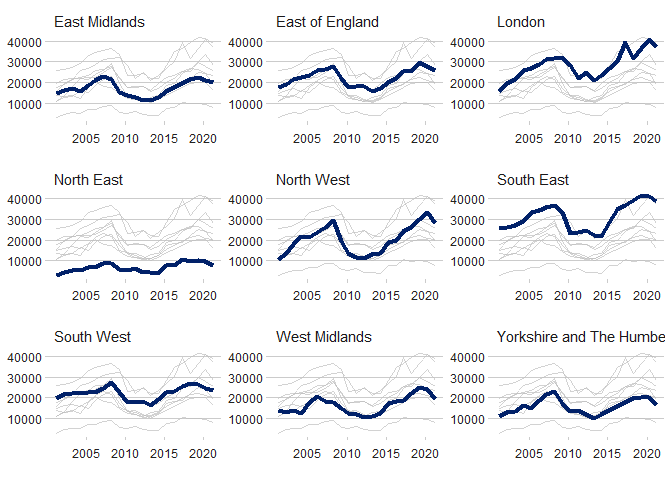
Again this function can be adapted to have the axis match what you may want from them, for example if you wanted:
- the axis to go from 0-50000
limits = c(0,50000) - labels at 0, 25000 and 50000
breaks = c(0,25000,50000) - labels to have commas in them, using the scales package
labels = scales::comma - y-axis to cross the x-axis at 0
expand = c(0,0)
facet_graph +
scale_y_continuous(breaks = c(0,25000,50000),limits = c(0,50000),labels = scales::comma,expand = c(0,0))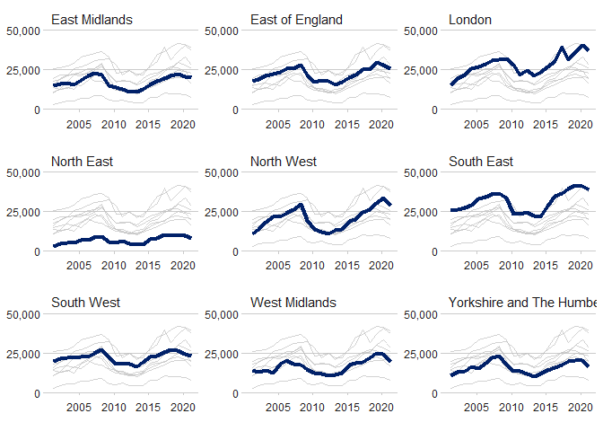
Creating a forecast time series
Sometimes you may want to present data on a graph of which some of the data is recorded data and some is a prediction or forecast. There are a few different ways to achieve this.
The example dataset for this is the GDP_Deflator data contained in the dluhctheme package
kable(GDP_Deflator)| year | GDP |
|---|---|
| 31/03/2020 | 94.8652 |
| 31/03/2021 | 100.2213 |
| 31/03/2022 | 100.0000 |
| 31/03/2023 | 102.4102 |
| 31/03/2024 | 104.3092 |
| 31/03/2025 | 106.3465 |
| 31/03/2026 | 108.4740 |
All the data up to 31/03/2022 is recorded data, and all afterwards is preidiction
The most simple method is to add a dotted line vertically on the graph to denoe where the predictions begin from.
#As with the previous examples, the date needs cleaning before running.
Forecast_df <- GDP_Deflator %>%
mutate(date = as.Date(year,tryFormats = "%d/%m/%Y"))
Forecast_df %>%
ggplot(aes(x = date, y=GDP)) +
geom_line(linewidth = 2,colour="blue") +
geom_vline(xintercept = as.Date("2022-03-31"),linewidth = 1.5,linetype="dashed") +
dluhc_style()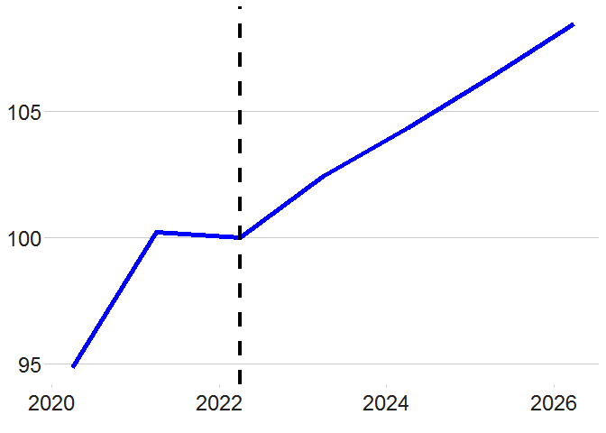
Another method would be to have the lines go from a solid line to a dashed line. To do this you need to add in a new column as well as duplicated the row which contains the last recorded value.
Forecast_df_2 <- Forecast_df %>%
mutate(type =ifelse(date <= as.Date("2022-03-31"),"Actual","Predicted")) %>%
add_row(year = "31/03/2022",date = as.Date("2022-03-31"),GDP=100,type = "Predicted") %>%
arrange(date)
kable(Forecast_df_2)| year | GDP | date | type |
|---|---|---|---|
| 31/03/2020 | 94.8652 | 2020-03-31 | Actual |
| 31/03/2021 | 100.2213 | 2021-03-31 | Actual |
| 31/03/2022 | 100.0000 | 2022-03-31 | Actual |
| 31/03/2022 | 100.0000 | 2022-03-31 | Predicted |
| 31/03/2023 | 102.4102 | 2023-03-31 | Predicted |
| 31/03/2024 | 104.3092 | 2024-03-31 | Predicted |
| 31/03/2025 | 106.3465 | 2025-03-31 | Predicted |
| 31/03/2026 | 108.4740 | 2026-03-31 | Predicted |
Forecast_df_2 %>%
ggplot(aes(x = date,y=GDP,group=type)) +
geom_line(aes(linetype = type), linewidth = 1.2, colour = "blue") +
dluhc_style()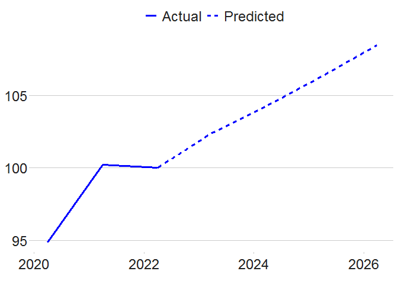
dluhctheme function
This is quite a long process, so a function has been created which will do this for you: forecast_timeseries()
forecast_timeseries(.data = GDP_Deflator,
datecol = year,
ycol = GDP,
cutdate = "01/04/2022",
dateformat = "%d/%m/%Y",
dottedline = TRUE,
label_names = c("Recorded","Forecast") )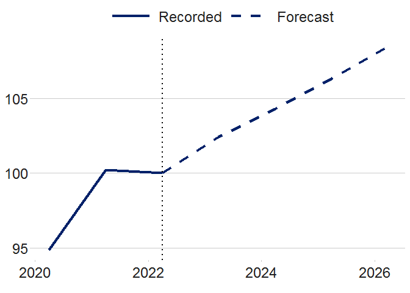
-
cutdateis the first day after the last recorded value (1st April 2022 is after 31st March 2022) -
dottedlineis a TRUE/FALSE variable, to whether you want a vertical dotted line at the cut date -
label_namesare the names given to the two lines
Make a bar chart
#Prepare data
bar_df <- gapminder %>%
filter(year == 2007 & continent == "Africa") %>%
arrange(desc(lifeExp)) %>%
head(5)
#Make plot
bars <- ggplot(bar_df, aes(x = country, y = lifeExp)) +
geom_bar(stat="identity",
position="identity",
fill="#1380A1") +
geom_hline(yintercept = 0, size = 1, colour="#333333") +
dluhc_style() +
labs(title="Reunion is highest",
subtitle = "Highest African life expectancy, 2007")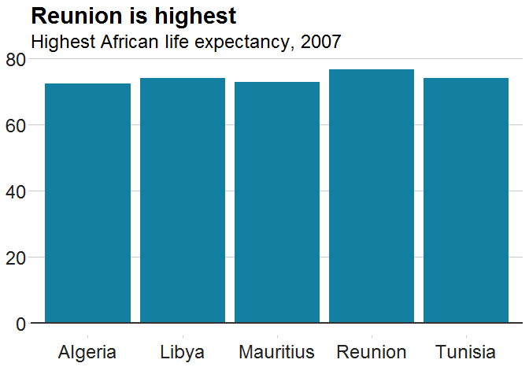
Stacked bar chart
#prepare data
stacked_df <- gapminder %>%
filter(year == 2007) %>%
mutate(lifeExpGrouped = cut(lifeExp,
breaks = c(0, 50, 65, 80, 90),
labels = c("Under 50", "50-65", "65-80", "80+"))) %>%
group_by(continent, lifeExpGrouped) %>%
summarise(continentPop = sum(as.numeric(pop)))
#set order of stacks by changing factor levels
stacked_df$lifeExpGrouped = factor(stacked_df$lifeExpGrouped, levels = rev(levels(stacked_df$lifeExpGrouped)))
#create plot
stacked_bars <- ggplot(data = stacked_df,
aes(x = continent,
y = continentPop,
fill = lifeExpGrouped)) +
geom_bar(stat = "identity",
position = "fill") +
dluhc_style() +
scale_y_continuous(labels = scales::percent) +
scale_fill_viridis_d(direction = -1) +
geom_hline(yintercept = 0, size = 1, colour = "#333333") +
labs(title = "How life expectancy varies",
subtitle = "% of population by life expectancy band, 2007") +
theme(legend.position = "top",
legend.justification = "left") +
guides(fill = guide_legend(reverse = TRUE))
This example shows proportions, but you might want to make a stacked bar chart showing number values instead - this is easy to change!
The value passed to the position argument will determine if your stacked chart shows proportions or actual values.
position = "fill" will draw your stacks as proportions, and position = "identity" will draw number values.
Grouped bar chart
Making a grouped bar chart is very similar to making a bar chart.
You just need to change position = "identity" to position = "dodge", and set the fill aesthetically instead:
#Prepare data
grouped_bar_df <- gapminder %>%
filter(year == 1967 | year == 2007) %>%
select(country, year, lifeExp) %>%
spread(year, lifeExp) %>%
mutate(gap = `2007` - `1967`) %>%
arrange(desc(gap)) %>%
head(5) %>%
gather(key = year,
value = lifeExp,
-country,
-gap)
#Make plot
grouped_bars <- ggplot(grouped_bar_df,
aes(x = country,
y = lifeExp,
fill = as.factor(year))) +
geom_bar(stat="identity", position="dodge") +
geom_hline(yintercept = 0, size = 1, colour="#333333") +
dluhc_style() +
scale_fill_manual(values = c("#1380A1", "#FAAB18")) +
labs(title="We're living longer",
subtitle = "Biggest life expectancy rise, 1967-2007")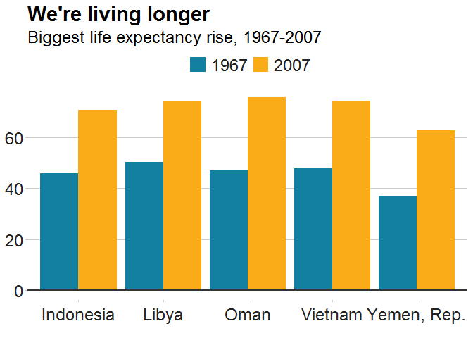
Faceted bar charts
Using the same data from the stacked bar charts, you can see how the data could be displayed different through faceting.
facet_df <- stacked_df %>%
group_by(continent) %>%
mutate(Proportion = continentPop/sum(continentPop))
facet_bars <- ggplot(data = facet_df,
aes(x = continent,
y = Proportion)) +
geom_bar(stat = "identity",
position = "identity") +
facet_wrap(~lifeExpGrouped)+
dluhc_style(size = 1) +
scale_y_continuous(labels = scales::percent)
facet_bars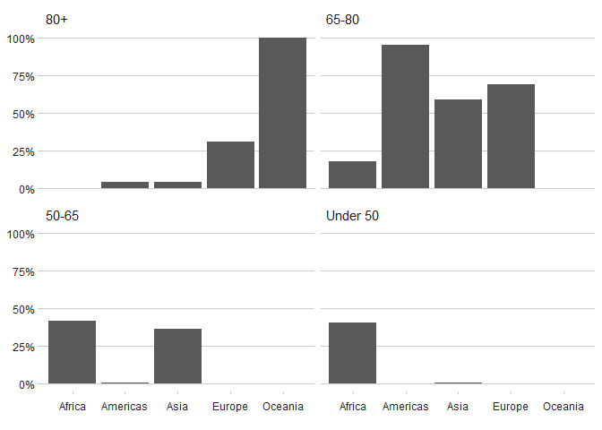
Static LA Maps
The package also allows you to create maps, currently only at LA level, using the LA_map function.
To create the map your data must have a column for the LA codes in the proper ONS format, not that mad loopy format that LPA use!
The example data for this is the number of help to buy sales in each local authority
kable(head(Help_to_Buy))| LA_Code | Completions |
|---|---|
| E06000022 | 406490 |
| E06000055 | 777743 |
| E06000008 | 178175 |
| E06000009 | 0 |
| E06000028 | 0 |
| E06000058 | 0 |
You need to specify a few things for this function:
-
.datais the name of the dataframe -
LA_colis the column which your LA code is in -
yearis the financial year which matches your data, so it will choose the correct map -
map_coloursis a two colour vector which has the low and high colour for the scale, as standard this is white and union blue -
saveif you set this to true it will save as a png, but you MUST specify the path in the filepath part -
countriesare the countries you want displayed E, E+W, GB or UK
HtB_map <- LA_map(.data = Help_to_Buy
,LA_col = LA_Code
,countries = "E"
,variable = Completions
,map_colours = c("#FFFFFF","#012169")
,year = "2021-22"
,save = F)## [1] "Your original data had 334 rows of data"
## [1] "On the map, there were 309 matches"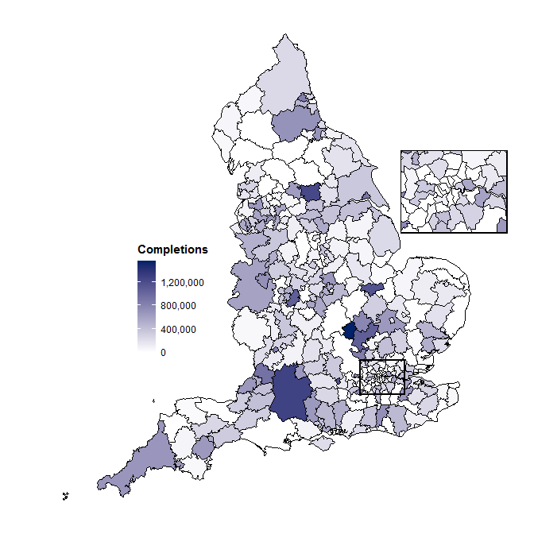